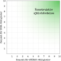

Halvtidsavstämning
Du har nu kommit lite drygs halvvägs genom det här självhjälpsmaterialet. Grattis till de nyupptäckter och lärdomar du har gjort i dina beteendeexperiment! Oavsett om det har gått som du önskade eller om du stött på problem, så har du vunnit möjlighet att reflektera över vad som varit hjälpande och hindrande för dig när du prövat att hävda dig själv konstruktivt.
Om du vill maximera effekterna av arbetet du gör med det här självhjälpsmaterialet, påminn dig om vilka fördelarna är för dig att byta undvikande av ångest mot aktivt deltagande som du jobbade med vecka 3.
Om du ännu inte gjort ditt första beteendeexperiment finns det gott om tid att komma ikapp den här veckan. Kom ihåg: Att utföra beteendeexperiment är att ge sig möjlighet att samla positiva erfarenheter. Du som hunnit utföra ett eller flera beteendeexperiment är självklart också välkommen att planera in och utföra fler. Använd arbetsbladet för beteendeexperiment, du kan fylla i det hur många gånger som helst.
Planera och genomför ett beteendeexperiment (PDF)
Exempel: Planera och genomför ett beteendeexperiment (PDF)
Vanliga frågor och svar
Här är några frågor som vi har märkt att många personer brukar ha vid den här tidpunkten.
1. ”Varför misslyckas jag med mitt beteendeexperiment?”

Det går inte att misslyckas med ett beteendeexperiment. Antingen går det precis som man vill – så bra, då! Eller så händer det värsta du kan tänka dig – din katastroftanke visar sig stämma. (Eller så går det halvbra.) Oavsett utfall finns det massor att lära sig av erfarenheten som du har skaffat dig. Kunde du klara av obehaget som uppstod genom att tolerera ångesten och/eller reglera ned den? Vad var hindrande för utförandet av målbeteendet, antingen i situationen i stort eller i form av egna tankar eller känslor? Vilka sårbarhetsfaktorer ”var aktiva” – var du trött och stressad? Vilka mer eller mindre medvetna säkerhetsbeteenden utförde du samtidigt som målbeteendet (pratade tyst, tittade bort, var aggressiv och så vidare). Vad vill du ändra till nästa gång?
Det man lär sig över tid kan också vara att saker och ting kan gå lite hur som helst: Ibland går allt bra när omständigheterna är optimala, ibland går allt dåligt trots att omständigheterna är optimala. Och ibland går det bra trots usla omständigheter! Därför finns det all anledning att tänka ”upp på hästen igen” och testa igen. Vem vet vad du lär dig härnäst?
2. ”Hur är det möjligt att respektera egna och andras rättigheter SAMTIDIGT?”
Många som skattar sin egen självhävdelse sätter antingen ett högt värde på respekt för egna rättigheter (men lågt på andras) eller ett högt värde på respekt för andras rättigheter (men lågt på egna). Så kan det förstås vara också. Det första exemplet kallas ”aggressiv självhävdelse”, det andra kallas ”passiv självhävdelse”. Men vi har också upptäckt att många tänker sig att respekt-skattningen är ett nollsummespel, ungefär som ”om jag sätter högt på mig själv betyder det att jag trampar på andras rättigheter” eller ”om jag sätter högt på andras rättigheter betyder det att jag försummar mina egna”.
Men måste det vara så?
Genom att göra det som är viktigt för en själv, men på ett sätt som respekterar den andras rättigheter, så visar man på sätt och vis respekt dubbelt upp, vilket ger en ”multiplikationseffekt”. 10 × 10 = 100. 100% respekt!
- Du själv får bättre självkänsla genom att inte uttrycka dig aggressivt, eftersom du slipper känna skuld och klandra dig själv efteråt. Hur nära 10 poäng kommer du?
- Den andra får bättre relation till dig genom att du inte uttrycker dig passivt, eftersom det ger hen möjlighet att ta ansvar för sina egna problem och slipper att du blir sur och bitter på hen. Hur nära 10 poäng kommer du?

3. ”Varför får jag MER ÅNGEST av avslappningsövningarna?”
Om du märker att ångestnivåerna går upp när du tränar avslappning beror det sannolikt på samma sak som gör att du är mer eller mindre spänd i vardagen till att börja med. Genom att du omedvetet spänner dig i vardagen reducerar du kortsiktigt den ångest det innebär att vara lite mer medvetet närvarande. Det här är ett vanligt fenomen, som enligt forskning drabbar mellan 15% till 50% av personer som tränar mindfulness eller avslappning. Att spänna sig kan för många fylla funktionen att ”ta kontroll” och att undvika känslor man lärt sig uppfatta som farliga eller oönskade tidigare i livet. Tyvärr leder spänningen också till att du också blir mer vaksam på hot, att du tänker fler negativa tankar om hur det ska gå, att du ältar mer av hur saker har gått och att du fortsätter undvika allt sådant i vardagen som väcker obehagliga känslor.
Fortsätt ändå! Om du fortsätter med övningarna kommer du att märka att du både klarar av att 1) tolerera och att 2) reglera ångesten själv – utan att ta till undvikande. Det är en vinst i sig. Men framför allt gör det att det blir lättare för dig att hävda dig själv konstruktivt, så att du 3) får mer av det du värdesätter i livet.
En artikel i Svenska Dagbladet 2020-03-02 (kräver inloggning) handlar om avslappningsframkallad ångest. I den säger Michelle Newman, professor i psykologi vid amerikanska Pennsylvania State University, att de som behöver avslappning mest är de som är mest benägna att få ångest när de slappnar av. Om du hör till den gruppen – fortsätt träna avslappning trots din ångest! Michelle Newman säger också: ”Vårt budskap är inte att det är dåligt för vissa människor att slappna av, tvärtom. För att må bra måste du kunna slappna av, och det betyder också att du kan behöva uppleva ångesttoppar ibland.”
4. ”Varför i hela världen ska jag inte dra mig undan om det är det jag känner för?”
Många som planerar och utför beteendeexperiment brukar förr eller senare ställa sig själva frågorna ”Varför ska jag hålla på så här och göra saker som jag tycker är obekväma eller till och med djupt obehagliga?” eller ”Varför ska jag inte lyssna på att min kropp signalerar att jag inte vill göra det här?”. Vi har inget bra svar på de frågorna. Men du som ställer dig dem har förmodligen själv bra svar på de frågorna. Så här är några motfrågor som kan hjälpa dig att hitta egna skäl att bryta undvikande och ta en mer aktiv del i ditt eget liv:
- Vad är det du missar när du låter bli att göra det där obehagliga?
- Hur skulle din självkänsla och ditt självförtroende påverkas av att du fortsätter utsätta dig för det du tidigare undvikit?
- Hur motiverande är det för dig att träna på att själv bli bättre på att reglera och/eller tolerar ångesten och andra jobbiga känslor, istället för att undvika dem?
- Hur villig är du att agera på ett sätt nu som gör att du kommer att få allt mindre ångestproblem i framtiden?
5. ”Jag har för mycket att göra, hur ska jag hinna träna avslapppning?”
Det är förstås rimligt att stress är hindrande för att öva avslappning! Vore det meningsfullt för dig att vända på perspektivet? Du skulle kunna testa att ge dig själv lite mer tid för själva avslappningsövningarna, för att se hur avspänning i kroppen 1) påverkar upplevelsen av stress och 2) ger dig lite mer tid för eftertanke, så att du väljer de sakerna som är verkligt viktiga (och välja bort allt det som du faktiskt inte vill göra). Skulle du vilja testa det?
6. ”Måste jag ALLTID utsätta mig för maximalt obehag?”
Nej, blanda lätt och svårt! Det är inget självändamål att utsätta sig för maximal ångest hela tiden. Livet skulle ju vara rent eländigt då. Poängen med träning i avslappning och konstruktiv självhävdelse är att ge dig själv större framkomlighet och flexibilitet. Vissa dagar är man mer sårbar än andra. Om du har en tung dag, unna dig då att lyssna på din kropp – det är också ett exempel på väldigt konstruktiv självhävdelse som många kämpar med. Ta sköna promenader och varma bad eller vad som helst som ger dig vila och är uttryck för självomsorg. Då laddar du batterierna så att du orkar fortsätta träna på konstruktiv självhävdelse!
7. ”Handlar konstruktiv självhävdelse bara om att säga nej?”
Absolut inte. Det handlar lika mycket om att aktivt välja saker som att aktivt välja bort saker. Tänk på att varje gång du väljer bort något så väljer du något annat. Konstruktiv självhävdelse kan lika gärna handla om att hävda sina känslor i nära relationer, till exempel att uttrycka varma känslor gentemot en vän, att ge en en kollega en komplimang eller att våga säga ”jag älskar dig” till sin partner. Att säga en sådan sak kan vara svårt nog, eftersom man när man säger det riskerar att utsätta sig för ångesten som kommer av den tunga katastroftanken att ens partner kanske inte älskar en tillbaka. Att då säga ”jag älskar dig” (istället för att undvika att göra det) är absolut att träna på konstruktiv självhävdelse!